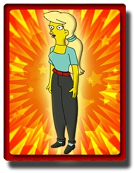
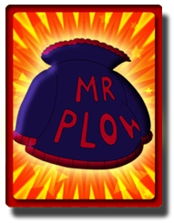
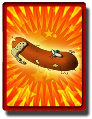
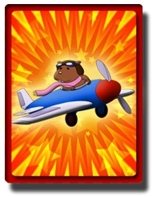
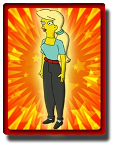
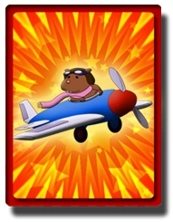

←Tarjetas coleccionables (todos los niveles)
Encontras la tarjeta de "Futbol Casero" detrás de la casa de la familia Simpsons
La de "la caja de Mr. Sparkle" en el parque de caravanas
En la Planta Nuclear tomando un asensor esta "la barra de carbono"
"El pergamino" en la sede de los Stonecutters, en la planta nuclear
"Derrite columnas 2000" en un camino en frente de la Mansión Burns en una glorieta, atras de un
garage azul
"Zumo de cangrejo" en el techo del Kwik-E-Mart
"Chili picante" en el patio de la casa del Jefe Wiggum
"La cabeza de Jebediah" está en el parque donde empiezas el nivel en la cabeza de la estatua
"Videojuego de Bonestorm" al final de una escalera cerca del mafioso encargado de la carrera bonus
"Señor conejito lindo" en las vías del ferrocarril
"Carnet de conducir" en un callejon cerca de los coches de bomberos
"Skinner culo gordo" en medio del autolavado.
"Juguete Radio AM" en el techo de un lugar cerca del parque anterior, en frente del hospital.
"Test de embarazo" al lado del estadio
"Esqueleto de ángel" en el techo de el calabozo del androide
"Alma de Bart" en el techo del bowling
"Lisa corazón de León" en la parte de arriba del faro en la costa

"La postal de San Valentín de Lisa" arriba del barco que esta al lado del farol por una rampa rayada
(roja y blanca) la entrada esta tapada por una publicidad que tiene un globo terraqueo.
"Polo de soja" cerca de la autopista destruida
"La máquina de Lisa" en estudios Krusty

"Aparato de Diente Maligno" por un camino echo de madera en la presa
"Carta de amor" en el puente cerca de los remolques
"Spray lacrimógeno" entre los remolques de caravanas
"Retrato de Burns Desnudo" En la oficina de Burns, con un gag, en el cuadro

"Bola de bolos de Homer" en el puente cerca de la Mansión Burns
"Álbum de tocador" detrás de la casa
"El blazier rojo" cerca de la gasolinera cerca de la Mansión Burns

"La cazadora del Señor Quitanieves" Entre la gasolinera de Springfield y el hombre de la rosquilla.
"Fresisuis agridulce" cerca del mafioso que realiza las carreras bonus

"La camiseta de Apu" en la construcción de cerca del mozo de donuts
"Camiseta Pin Pals" cerca del local de los mafiosos
"Señal de propuesta 24" en el techo de Moe's
"Alimento de bebes" cerca del ferrocarril

"Perrito caliente" cerca del monorrail
"Disfraz de Ganesha" en un sector de la autopista para saltar

"Matrícula Bort" en la rampa al lado de el Casino
"La camiseta de Bart" en el techo del Planet Hype

"La bota de Australia: encima del gran barco" al subir por medio de la plataforma que baja al lado
del tipo que vende los autos
"Dibujo de Rasca y Pica" bajo el globo de la Fábrica Duff
"El nº1 Hombre Radiactivo" al comienzo del nivel, necesitas los camiones altos para tomarla
"El proyecto de ciencias del hámster volador" en la autopista destruida

"Gabbo" cerca de donde salís del campo Krusty entre las plantas
"Alma de rosquilla" en la casa de los flanders
"Libro de cocina humano" en el patio de la escuela
"La tostadora del tiempo" en el techo de la tienda de rosquillas
"Muñeco Krusty" en la plaza
"Peluquín infernal" en el lago del cementerio
"Mano de mono" en la granja de kletus
"Calendario de Smarzo" en la oficina del señor burns subiendo unas escaleras al lado de la entrada
de la planta nuclear
Encontras la tarjeta de "Futbol Casero" detrás de la casa de la familia Simpsons
La de "la caja de Mr. Sparkle" en el parque de caravanas
En la Planta Nuclear tomando un asensor esta "la barra de carbono"
"El pergamino" en la sede de los Stonecutters, en la planta nuclear
"Derrite columnas 2000" en un camino en frente de la Mansión Burns en una glorieta, atras de un garage azul
"Zumo de cangrejo" en el techo del Kwik-E-Mart
"Chili picante" en el patio de la casa del Jefe Wiggum
"La cabeza de Jebediah" está en el parque donde empiezas el nivel en la cabeza de la estatua
"Videojuego de Bonestorm" al final de una escalera cerca del mafioso encargado de la carrera bonus
"Señor conejito lindo" en las vías del ferrocarril
"Carnet de conducir" en un callejon cerca de los coches de bomberos
"Skinner culo gordo" en medio del autolavado.
"Juguete Radio AM" en el techo de un lugar cerca del parque anterior, en frente del hospital.
"Test de embarazo" al lado del estadio
"Esqueleto de ángel" en el techo de el calabozo del androide
"Alma de Bart" en el techo del bowling
"Lisa corazón de León" en la parte de arriba del faro en la costa
"La postal de San Valentín de Lisa" arriba del barco que esta al lado del farol por una rampa rayada (roja y blanca) la entrada esta tapada por una publicidad que tiene un globo terraqueo.
"Polo de soja" cerca de la autopista destruida
"La máquina de Lisa" en estudios Krusty
"Aparato de Diente Maligno" por un camino echo de madera en la presa
"Carta de amor" en el puente cerca de los remolques
"Spray lacrimógeno" entre los remolques de caravanas
"Retrato de Burns Desnudo" En la oficina de Burns, con un gag, en el cuadro
"Bola de bolos de Homer" en el puente cerca de la Mansión Burns
"Álbum de tocador" detrás de la casa
"El blazier rojo" cerca de la gasolinera cerca de la Mansión Burns
"La cazadora del Señor Quitanieves" Entre la gasolinera de Springfield y el hombre de la rosquilla.
"Fresisuis agridulce" cerca del mafioso que realiza las carreras bonus
"La camiseta de Apu" en la construcción de cerca del mozo de donuts
"Camiseta Pin Pals" cerca del local de los mafiosos
"Señal de propuesta 24" en el techo de Moe's
"Alimento de bebes" cerca del ferrocarril
"Perrito caliente" cerca del monorrail
"Disfraz de Ganesha" en un sector de la autopista para saltar
"Matrícula Bort" en la rampa al lado de el Casino
"La camiseta de Bart" en el techo del Planet Hype
"La bota de Australia: encima del gran barco" al subir por medio de la plataforma que baja al lado del tipo que vende los autos
"Dibujo de Rasca y Pica" bajo el globo de la Fábrica Duff
"El nº1 Hombre Radiactivo" al comienzo del nivel, necesitas los camiones altos para tomarla
"El proyecto de ciencias del hámster volador" en la autopista destruida
"Gabbo" cerca de donde salís del campo Krusty entre las plantas
"Alma de rosquilla" en la casa de los flanders
"Libro de cocina humano" en el patio de la escuela
"La tostadora del tiempo" en el techo de la tienda de rosquillas
"Muñeco Krusty" en la plaza
"Peluquín infernal" en el lago del cementerio
"Mano de mono" en la granja de kletus
"Calendario de Smarzo" en la oficina del señor burns subiendo unas escaleras al lado de la entrada de la planta nuclear